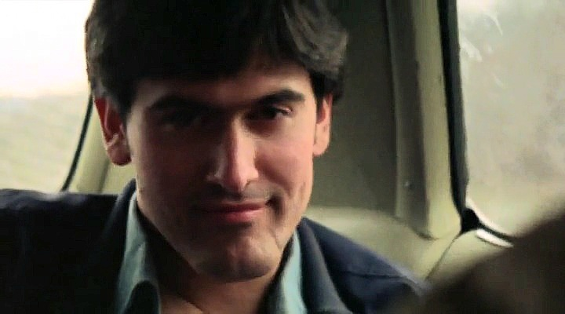
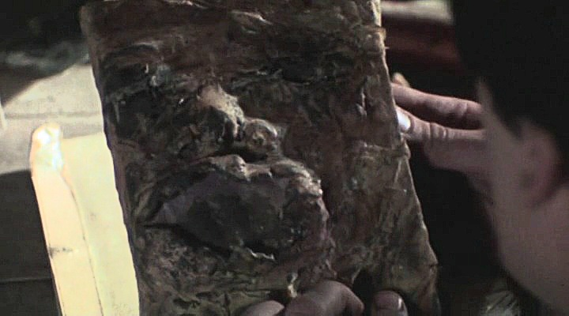
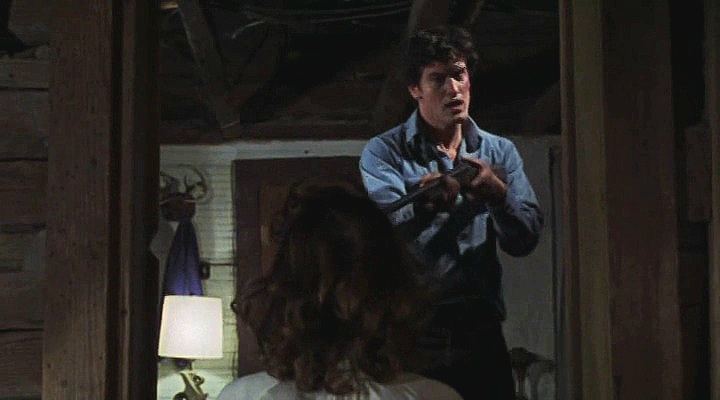
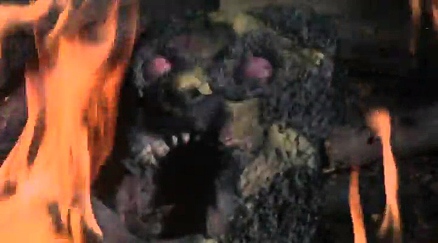
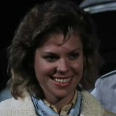

The Beginning Of Ash's Journey
The First Encounter With The Evil Dead

Ash and his friends travel toward the isolated Knowby cabin.
The Journey To The Cabin
Before becoming the legendary Deadite fighter known throughout history, Ash Williams was simply a young man travelling with his girlfriend Linda and his friends Cheryl, Scotty and Shelly to a remote cabin hidden deep within the woods of Tennessee.
The group believed they were heading toward a quiet holiday away from everyday life. Unknown to them, the cabin had already become connected to an ancient evil after Professor Raymond Knowby discovered the Necronomicon Ex Mortis while researching forgotten languages and supernatural forces.
Inside the cabin, Ash and his friends discovered Knowby's recordings and learned of the terrifying Book of the Dead. When passages from the Necronomicon were played aloud, a powerful Kandarian force was awakened.

The recording that awakens the ancient evil.
The Awakening Of The Kandarian Demon
The words spoken from Professor Knowby's recordings unleashed a supernatural force capable of possessing the living and turning them into Deadites. The evil that entered the cabin was not merely a physical threat, but an ancient intelligence that could manipulate fear, memories and emotions.
One by one, Ash's friends became victims of the darkness. Cheryl, Shelly and Scotty were consumed by the evil, leaving Ash trapped in a nightmare he could barely understand.
The experience forced Ash to confront something beyond human understanding. The ordinary man who arrived at the cabin began the first steps toward becoming the warrior who would one day oppose the forces of darkness.

Ash is forced to fight the people he once loved.
The Loss Of Linda
Linda became the most painful loss of Ash's first encounter with the Evil Dead. After being possessed by the Kandarian force, she returned as a Deadite, forcing Ash into an impossible battle against the woman he loved.
Her death became one of the defining moments of Ash's life. The fight was no longer about escaping the woods; it became a battle for survival against an evil that had taken everything from him.

Ash destroys the Necronomicon, believing the nightmare is over.
The Destruction Of The Book
After facing the horrors unleashed within the cabin, Ash discovered that the only way to end the nightmare was to destroy the source of the evil itself. He threw the Necronomicon Ex Mortis into the fire, believing the ancient darkness had finally been defeated.
However, Ash did not understand that destroying the physical book would not immediately end the forces that had already been unleashed. The Kandarian evil remained active, and as Ash stood alone in the aftermath, the darkness rushed toward him.
This moment would lead directly into the next chapter of his journey.

The Kandarian force continues its attack as Ash's nightmare enters a new chapter.
The Evil Dead Continue
Ash believed the nightmare had ended when he destroyed the Necronomicon Ex Mortis. However, the evil unleashed from the Book of the Dead was not so easily defeated. The ancient Kandarian force that had haunted the cabin remained, and the darkness that began in the woods continued its assault.
The unseen force rushes toward Ash, violently throwing him through the forest and leaving him at the mercy of the same evil he believed he had escaped. This moment marks the beginning of the next stage of Ash's transformation.
The ordinary man who survived the horrors of the cabin is pushed even further into a battle he never asked for. The forces of darkness will not allow Ash to walk away, because his connection to the Necronomicon and his destiny have only just begun to reveal themselves.

Ash briefly falls under the influence of the Kandarian evil.
Ash Becomes The Victim Of The Evil Dead
After being attacked by the Kandarian force, Ash becomes temporarily possessed by the evil that surrounds the cabin. The same darkness that transformed his friends into Deadites now attempts to consume him.
Unlike the people who fell before him, Ash manages to resist the possession and returns to himself. This becomes an important turning point in his journey, proving that there is something different about him. The evil can attack him, but it cannot completely break him.
Ash awakens alone, surrounded by the remains of the nightmare he survived before. With no friends left beside him and no understanding of why the darkness continues to pursue him, he is forced to fight alone.

Linda returns as a Deadite in one of Ash's most haunting encounters.
The Return Of Linda
Ash soon discovers that the evil has not finished tormenting him. Linda, who had already died during his first encounter with the Deadites, returns as a possessed force of darkness.
Her return becomes one of Ash's most disturbing battles. The woman he once loved is no longer herself, but another victim controlled by the Kandarian evil.
After her possession, Linda's body becomes part of the supernatural horror surrounding the cabin. In one of the most unforgettable moments of Ash's journey, her headless body rises and performs a twisted dance before attacking him.
The encounter forces Ash to once again confront the cruel reality of the Evil Dead: the people closest to him can be taken by the darkness and turned against him.

Ash creates the weapon that would become a symbol of his legend.
The Birth Of The Chainsaw-Hand
As the battle continues, the evil attacks Ash in a way that changes him forever. His own right hand becomes possessed and turns against him, forcing Ash into an impossible decision.
With no other choice, Ash removes his own hand to stop the Deadite infection from spreading. What begins as a desperate act of survival eventually becomes the creation of his most famous weapon.
Replacing his lost hand with a chainsaw, Ash transforms his greatest weakness into a symbol of defiance. He is no longer only running from the Evil Dead — he is beginning to fight back against them.
This moment represents a major step in Ash's evolution. The frightened survivor from the first night in the cabin is becoming the warrior who will eventually be known as El Jefe.

Annie Knowby arrives carrying her father's research and the missing pages.
Annie Knowby And The Missing Pages
Ash's battle changes when Annie Knowby, the daughter of Professor Raymond Knowby, arrives at the cabin. She brings her father's research, translations and the missing pages of the Necronomicon Ex Mortis.
The original Book of the Dead that Ash destroyed is no longer present. However, the surviving pages contain important knowledge about the ancient forces connected to the Deadites and provide a way to understand the evil threatening the cabin.
Through Annie's discoveries, Ash begins to learn that the events surrounding the Necronomicon are part of something much older and more powerful than he ever imagined.

Henrietta Knowby returns as one of the most terrifying Deadites Ash faces.
The Curse Of Henrietta Knowby
Annie Knowby's arrival reveals even more of the horrors surrounding her father's research. Professor Knowby had not only studied the Necronomicon, but had also witnessed the terrible consequences of the forces it unleashed.
Among those claimed by the darkness was Annie's own mother, Henrietta Knowby. The evil that infected the cabin transformed Henrietta into a Deadite, creating another horrifying reminder of the power Ash was fighting against.
Ash is forced to confront yet another person who has been consumed by the Kandarian forces. However, unlike the frightened man who first entered the cabin, Ash now faces the evil with determination and refuses to be broken by it.
Every battle strengthens Ash's resolve. The darkness that destroyed his old life is unknowingly shaping him into the warrior described within the ancient writings.

Ash stands against the forces of darkness surrounding the cabin.
The Battle For The Cabin
With Annie's knowledge of the missing Necronomicon pages, Ash learns more about the evil surrounding the cabin. The Deadites continue their attack, and the survivors must work together to stop the darkness from spreading.
Ash is no longer fighting simply to escape. The experiences that have changed him force him to take control of the situation. He has lost his friends, lost his hand and faced horrors beyond human understanding, yet he continues to stand against the evil.
The chainsaw and his determination become symbols of his transformation. Ash Williams, once an ordinary man caught in an impossible nightmare, has become the person capable of challenging the supernatural forces that others cannot defeat.

The missing pages reveal the connection between Ash and the ancient prophecy.
The Prophecy Of The Hero From The Sky
The writings connected to the Necronomicon reveal that Ash's encounters with the Evil Dead are not random. Ancient prophecy speaks of a hero who will arrive from the sky and stand against the forces of darkness.
Although Ash does not consider himself a hero, his actions prove otherwise. He survives encounters that destroy others, resists the possession that claims so many victims and repeatedly chooses to fight when escape seems impossible.
The prophecy transforms Ash's struggle from a simple fight for survival into part of an ancient conflict between humanity and the supernatural forces connected to the Necronomicon.
The man who entered the woods looking for a weekend away is becoming the warrior foretold within the ancient writings.

Ash is pulled through time toward the next chapter of his destiny.
The Kandarian Portal
After the battle at the cabin, Ash attempts to finally put an end to the darkness. However, the forces connected to the Necronomicon have one final role for him to play.
A powerful vortex opens, drawing Ash away from his own time and sending him into the distant past. The ordinary man from the modern world is transported into an age of kingdoms, warriors and ancient evil.
Rather than escaping the conflict, Ash discovers that he has been pulled deeper into it. The battle against the Evil Dead was never only about the cabin — it was part of a much older war that stretches across centuries.

Ash's destiny leads him into an age of darkness.
The Rise Of El Jefe
Arriving in the medieval past, Ash discovers that the forces of darkness are once again threatening humanity. The prophecy surrounding the Necronomicon now places him at the centre of the conflict.
He is still the same sarcastic, reluctant man who never asked for this responsibility, but his journey has changed him. The horrors of the cabin have forged him into a warrior capable of facing impossible enemies.
Armed with his chainsaw hand, his courage and the experience gained from surviving the Evil Dead, Ash accepts the role that fate has forced upon him.
The hero from the sky has arrived.
The Legend Of Ash Williams
Ash Williams' journey is the story of an ordinary man transformed by extraordinary circumstances. He did not seek power, glory or destiny, but every battle against the Evil Dead pushed him closer to becoming the legendary warrior known as El Jefe.
From the moment he entered the Knowby cabin, Ash became connected to an ancient struggle between humanity and the forces unleashed by the Necronomicon. The losses he suffered, the enemies he defeated and the horrors he endured all shaped the hero he would become.
The Deadites would continue to return, but so would Ash Williams — the reluctant hero, the chosen warrior and the man destined to stand against the darkness.